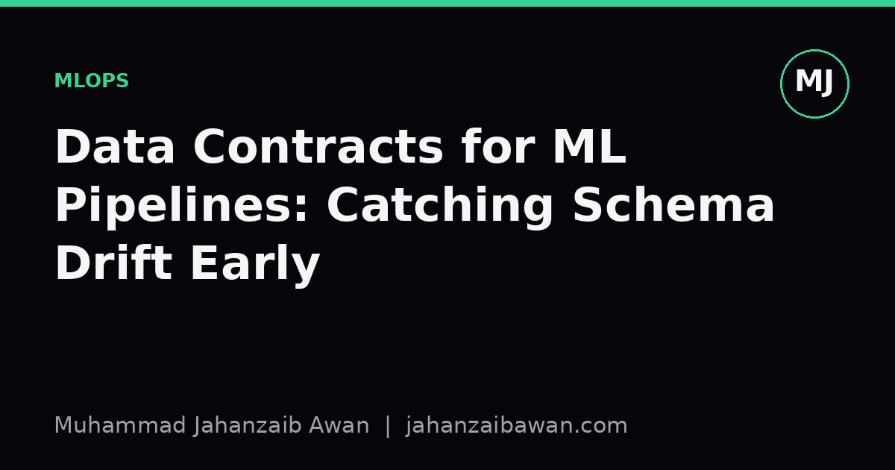

Data Contracts for ML Pipelines: Catching Schema Drift Early
A quiet upstream change to a column name or a unit of measure can silently wreck a model. Data contracts turn that silent failure into a loud, early one.

The failure that nobody notices
Most model failures I have seen were not caused by a bad algorithm. They were caused by an upstream table quietly changing shape. A currency column switched from pounds to pence. A categorical field gained a new value nobody had seen in training. A timestamp changed from local time to UTC. None of these are exotic bugs. They are ordinary changes made by another team, for perfectly sensible reasons, with no idea that a model three systems downstream depends on the old assumption.
The reason this is so dangerous in machine learning specifically is that models rarely crash when the input distribution shifts. They just produce worse predictions, calmly and confidently. A broken join in a traditional software pipeline usually throws an error. A subtle unit change in a feature column just shifts every prediction by a constant factor, and the model keeps serving results as if nothing happened. Nobody gets paged. The dashboard looks fine until someone notices the business metric has been sliding for three weeks.
This is the core argument for data contracts. A data contract is an explicit, enforced agreement between the producer of a dataset and its consumers about what the data will look like: field names, types, allowed ranges, nullability, units, and update cadence. It is not a new idea in spirit, it is essentially an API specification applied to data instead of code. What is new is treating it as a first-class artefact in ML pipelines, checked automatically, rather than as tribal knowledge in someone's head or a stale wiki page.
A worked example of drift you would not catch by eye
Suppose you maintain a churn model trained on customer usage data refreshed weekly. One of your features is average_session_minutes, and in training it ranges from roughly 2 to 90 minutes, with a mean around 18. One week, the analytics team upgrades their event tracker. The new tracker logs session length in seconds rather than minutes for a subset of newly onboarded customers, because of a default unit setting nobody flagged in the migration notes.
Your pipeline does not crash. The column is still called average_session_minutes, still a float, still non-null. But for the affected rows, values that should read 18.0 now read 1080.0. If this subset is small, say three percent of incoming rows, the aggregate statistics barely move: the mean creeps from 18.0 to perhaps 20.9, well within the kind of natural fluctuation you would expect week to week. A standard drift monitor watching for a shift in the overall mean or a jump in the Kolmogorov-Smirnov statistic might not fire at all, because three percent of rows is not enough to trip a global threshold.
Yet those three percent of predictions are now badly wrong, because the model has never seen an input of 1080 for this feature and will extrapolate wildly, likely predicting near-certain churn or near-zero churn depending on how the trees or weights happen to respond to an out-of-range value. If those customers happen to be your newest, highest-value cohort, the business impact is disproportionate to the tiny fraction of corrupted rows. This is exactly the kind of fault that aggregate drift detection is weak at catching and that a schema contract catches immediately.
A contract for this field would state, explicitly and machine-checkably, that average_session_minutes is a float bounded between 0 and 300, in minutes, non-null, with a documented owner and update frequency. The moment the new tracker output hits that boundary check, at the very first row with value 1080, the pipeline rejects or quarantines the batch and raises an alert naming the exact field and the exact rule violated. You find out on day one, from an automated check, rather than three weeks later from a confused query about churn rates.

What a contract actually needs to specify
A useful data contract is more than a type signature. At minimum it should cover the schema itself: field names, types, and whether nulls are permitted. It should cover semantic constraints: valid ranges for numeric fields, an enumerated set of allowed categories, and units where relevant, since unit ambiguity is one of the most common and most silent sources of drift. It should cover statistical expectations too, such as an expected range for the proportion of nulls or the cardinality of a categorical field, because a categorical column that suddenly gains forty new values is a signal worth investigating even if every individual value is technically valid.
It also needs ownership and versioning. When a producing team wants to change a field, that change should be a proposed contract update, reviewed by consuming teams, with a migration window, rather than a silent deploy. This sounds bureaucratic, and a little bit of friction is the point. The cost of a five-minute review is trivial compared with the cost of a model quietly serving degraded predictions to real customers for weeks.
Practically, contracts are enforced with validation at the boundary, ideally as close to ingestion as possible, using something like a schema validation library or a data quality framework that runs checks before data is allowed into a training or serving pipeline. The checks should fail loudly and specifically: not a generic pipeline error, but a message stating which field, which rule, and which rows violated it. This is the difference between a system that tells you something is wrong and a system that tells you exactly what is wrong, which matters enormously when you are debugging at speed.
Why this matters more as pipelines grow
The case for contracts scales with organisational complexity, not with model complexity. A single data scientist working alone on one dataset can hold the whole schema in their head and notice a weird value by eye. The moment a feature pipeline has multiple upstream producers, multiple consuming models, and people who change things without knowing who depends on them, informal vigilance stops working. This is precisely the environment most production ML systems live in.
Data contracts will not catch every kind of drift; genuine concept drift, where the relationship between features and the target changes even though the schema stays perfectly valid, is a separate problem needing separate monitoring, usually based on tracking model performance against ground truth over time. But contracts catch a large and particularly insidious category of failure cheaply, at the source, before it ever reaches a model. The practical takeaway is straightforward: write down what your data is supposed to look like, enforce it automatically at the point of ingestion, and treat any proposed change to that shape as something requiring explicit agreement, not something to discover after the fact in a postmortem.